Géographie
Première visite ? Ce n’est pas un moteur de recherche, mais un catalogue gratuit de liens vérifiés vers les sources d’origine.
Cliquez sur un pays du globe ou cherchez-le par son nom : une fiche s’ouvre avec la capitale, la population, la superficie, les langues officielles, la monnaie, les pays voisins et l’heure locale, ainsi que des liens vers la carte, l’encyclopédie, la télévision, la radio et les webcams du pays. Pays et territoires : 249.
Tous les pays et territoires — capitale, population, superficie (249)
| Pays | Capitale | Population | Superficie, km² |
|---|---|---|---|
| Afghanistan | Kaboul | 41 454 761 (2023) | 652 230 |
| Afrique du Sud | Le Cap, Pretoria, Bloemfontein | 62 027 503 (2022) | 1 221 037 |
| Albanie | Tirana | 2 811 655 (2023) | 28 748 |
| Algérie | Alger | 45 600 000 (2026) | 2 381 741 |
| Allemagne | Berlin | 83 467 117 (2025) | 357 588 |
| Andorre | Andorre-la-Vieille | 89 752 (2026) | 468 |
| Angola | Luanda | 36 749 906 (2023) | 1 246 700 |
| Anguilla | The Valley | 19 079 (2023) | 91 |
| Antarctique | — | 4 400 (2009) | 13 720 000 |
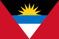 Antigua-et-Barbuda | Saint John's | 101 489 (2023) | 440 |
| Arabie saoudite | Riyad | 33 000 000 (2018) | 2 250 000 |
| Argentine | Buenos Aires | 47 327 407 (2022) | 2 780 400 |
| Arménie | Erevan | 2 930 450 (2017) | 29 743 |
| Aruba | Oranjestad | 106 739 (2022) | 179 |
| Canberra | 27 614 411 (2025) | 7 692 024 | |
| Autriche | Vienne | 8 979 894 (2022) | 83 879 |
| Azerbaïdjan | Bakou | 10 180 770 (2023) | 86 600 |
| Bahamas | Nassau | 399 440 (2023) | 13 878 |
| Bahreïn | Manama | 2 700 000 (2026) | 786 |
| Bangladesh | Dacca | 175 686 899 (2025) | 147 570 |
| Barbade | Bridgetown | 303 431 (2023) | 439 |
| Belgique | Bruxelles | 11 825 551 (2025) | 30 688 |
| Belize | Belmopan | 411 106 (2023) | 22 966 |
| Bénin | Porto-Novo | 14 111 034 (2023) | 114 763 |
| Bermudes | Hamilton | 65 024 (2013) | 53 |
| Bhoutan | Thimphou | 796 682 (2025) | 38 394 |
| Biélorussie | Minsk | 9 056 080 (2026) | 207 597 |
| Bolivie | Sucre, La Paz | 12 244 159 (2023) | 1 098 581 |
| Bosnie-Herzégovine | Sarajevo | 3 816 459 (2022) | 10 |
| Botswana | Gaborone | 2 480 244 (2023) | 581 737 |
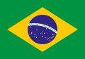 Brésil | Brasilia | 214 211 951 (2026) | 8 515 767 |
| Brunei | Bandar Seri Begawan | 458 949 (2023) | 5 765 |
| Bulgarie | Sofia | 6 423 207 (2025) | 110 994 |
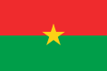 Burkina Faso | Ouagadougou | 23 025 776 (2023) | 274 200 |
| Burundi | Gitega | 13 689 450 (2023) | 27 834 |
| Cambodge | Phnom Penh | 17 423 880 (2023) | 181 035 |
| Cameroun | Yaoundé | 28 372 687 (2023) | 475 442 |
| Canada | Ottawa | 40 000 000 (2023) | 9 984 670 |
| Cap-Vert | Praia | 555 988 (2020) | 4 033 |
| Chili | Santiago | 19 458 000 (2021) | 756 102 |
| Chine | Pékin | 1 404 890 000 (2025) | 9 596 961 |
| Chypre | Nicosie | 1 344 976 (2023) | 9 242 |
| Colombie | Bogota | 52 321 152 (2023) | 1 141 748 |
| Comores | Moroni | 900 000 (2026) | 2 034 |
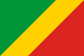 Congo-Brazzaville | Brazzaville | 6 278 845 (2024) | 342 000 |
| Congo-Kinshasa | Kinshasa | 105 789 731 (2023) | 2 344 858 |
| Corée du Nord | Pyongyang | 26 418 204 (2023) | 120 540 |
| Corée du Sud | Séoul | 51 628 117 (2022) | 100 295 |
| Costa Rica | San José | 5 265 575 (2024) | 51 180 |
| Côte d’Ivoire | Yamoussoukro | 31 165 654 (2023) | 322 463 |
| Croatie | Zagreb | 3 871 833 (2021) | 56 594 |
| Cuba | La Havane | 10 985 974 (2023) | 109 884 |
| Curaçao | Willemstad | 152 849 (2023) | 444 |
| Danemark | Copenhague | 5 822 863 (2020) | 42 925 |
| Djibouti | Djibouti | 1 000 000 (2026) | 23 200 |
| Dominique | Roseau | 74 656 (2023) | 751 |
| Égypte | Le Caire | 114 500 000 (2026) | 1 010 408 |
| Émirats arabes unis | Abou Dabi | 10 100 000 (2026) | 83 600 |
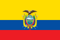 Équateur | Quito | 16 938 986 (2022) | 257 204 |
| Érythrée | Asmara | 3 497 000 (2019) | 117 600 |
| Madrid | 48 592 909 (2024) | 505 990 | |
| Estonie | Tallinn | 1 369 995 (2025) | 45 335 |
| Eswatini | Lobamba, Mbabane | 1 230 506 (2023) | 17 364 |
| État de la Cité du Vatican | Vatican | 882 (2024) | 0,49 |
| États-Unis | Washington | 340 110 988 (2024) | 9 826 675 |
| Éthiopie | Addis-Abeba | 128 691 692 (2023) | 1 104 300 |
| Fidji | Suva | 926 276 (2018) | 18 274 |
| Finlande | Helsinki | 5 652 881 (2025) | 338 478 |
| Paris | 68 605 616 (2025) | 643 801 | |
| Gabon | Libreville | 2 300 000 (2023) | 267 667 |
| Gambie | Banjul | 2 639 916 (2021) | 11 300 |
| Géorgie | Tbilissi | 3 929 581 (2024) | 69 700 |
| Géorgie du Sud-et-les Îles Sandwich du Sud | King Edward Point | 35 (2019) | 4 066 |
| Ghana | Accra | 32 833 031 (2021) | 238 535 |
| Gibraltar | Gibraltar | 34 003 (2020) | 6,84 |
| Grèce | Athènes | 10 566 531 (2022) | 131 957 |
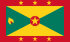 Grenade | Saint-Georges | 114 299 (2023) | 348 |
| Groenland | Nuuk | 56 542 (2025) | 2 166 086 |
| Basse-Terre | 384 160 (2023) | 1 628 | |
| Guam | Hagåtña | 153 836 (2020) | 544 |
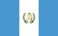 Guatemala | Guatemala | 17 263 239 (2018) | 108 889 |
| Guernesey | Saint-Pierre-Port | 67 787 (2024) | 78 |
| Guinée | Conakry | 17 521 167 (2025) | 245 857 |
| Guinée équatoriale | Ciudad de la Paz | 1 847 549 (2023) | 28 051 |
| Guinée-Bissau | Bissau | 1 861 283 (2017) | 36 125 |
| Guyana | Georgetown | 878 674 (2022) | 214 970 |
| Cayenne | 293 996 (2023) | 83 534 | |
| Haïti | Port-au-Prince | 10 981 229 (2017) | 27 750 |
| Honduras | Tegucigalpa | 11 002 356 (2025) | 112 492 |
| Hongrie | Budapest | 9 489 000 (2025) | 93 011 |
| — | — | 49 | |
| Île Christmas | Flying Fish Cove | 1 692 (2021) | 135 |
| Île de Man | Douglas | 84 523 (2024) | 572 |
| Île Norfolk | Kingston | 2 188 (2021) | 34,6 |
| Îles Åland | Mariehamn | 30 836 (2025) | 1 583 |
| Îles Caïmans | George Town | 88 833 (2024) | 264 |
| Îles Cocos | West Island | 602 (2021) | 14 |
| Îles Cook | Avarua | 14 222 (2023) | 240 |
| Îles Féroé | Tórshavn | 54 149 (2023) | 1 399 |
| Îles Heard-et-MacDonald | — | — | 368 |
| Îles Malouines | Port Stanley | 4 550 (2018) | 12 200 |
| Îles Mariannes du Nord | Saïpan | 51 475 (2022) | 464 |
| Îles Marshall | Majuro | 54 366 (2023) | 181 |
| Îles mineures éloignées des États-Unis | — | 190 (2010) | 34,2 |
| Îles Pitcairn | Adamstown | 50 (2019) | 47 |
| Îles Salomon | Honiara | 611 343 (2017) | 28 400 |
| Îles Turques-et-Caïques | Cockburn Town | 44 542 (2020) | 417 |
| Îles Vierges britanniques | Road Town | 39 369 (2023) | 151 |
| Îles Vierges des États-Unis | Charlotte-Amélie | 104 917 (2023) | 346 |
| Inde | New Delhi | 1 326 093 247 (2020) | 3 287 263 |
| Indonésie | Jakarta | 275 439 000 (2021) | 1 904 570 |
| Irak | Bagdad | 43 500 000 (2026) | 437 072 |
| Iran | Téhéran | 92 417 700 (2025) | 1 648 195 |
| Irlande | Dublin | 5 149 139 (2022) | 69 797 |
| Islande | Reykjavik | 376 248 (2022) | 103 004 |
| Israël | Jérusalem | 9 840 000 (2023) | 20 770 |
| Italie | Rome | 58 850 717 (2023) | 302 068 |
| Jamaïque | Kingston | 2 734 093 (2019) | 10 992 |
| Japon | Tokyo | 123 802 000 (2024) | 377 974 |
| Jersey | Saint-Hélier | 103 267 (2021) | 118 |
| Jordanie | Amman | 11 300 000 (2026) | 89 341 |
| Kazakhstan | Astana | 20 139 914 (2024) | 2 724 900 |
| Kenya | Nairobi | 47 564 296 (2019) | 581 309 |
| Kirghizstan | Bichkek | 7 281 800 (2025) | 199 951 |
| Kiribati | Tarawa-Sud | 134 518 (2024) | 811 |
| Koweït | Koweït | 4 300 000 (2026) | 17 818 |
| La Réunion | Saint-Denis | 889 679 (2023) | 2 512 |
| Laos | Vientiane | 6 858 160 (2017) | 236 800 |
| Lesotho | Maseru | 2 233 339 (2017) | 30 355 |
| Lettonie | Riga | 1 845 096 (2026) | 64 594 |
| Liban | Beyrouth | 5 300 000 (2026) | 10 452 |
| Liberia | Monrovia | 5 214 030 (2021) | 111 369 |
| Libye | Tripoli | 7 100 000 (2026) | 1 759 541 |
| Liechtenstein | Vaduz | 38 020 (2019) | 160 |
| Lituanie | Vilnius | 2 860 002 (2023) | 65 300 |
| Luxembourg | Luxembourg | 690 959 (2026) | 2 593 |
| Macédoine du Nord | Skopje | 1 836 713 (2021) | 25 713 |
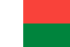 Madagascar | Antananarivo | 31 964 956 (2024) | 587 295 |
| Malaisie | Kuala Lumpur | 34 231 700 (2025) | 330 803 |
| Malawi | Lilongwe | 17 563 749 (2018) | 118 484 |
| Maldives | Malé | 436 330 (2017) | 298 |
| Mali | Bamako | 22 395 489 (2022) | 1 240 192 |
| Malte | La Valette | 553 214 (2023) | 316 |
| Maroc | Rabat | 38 300 000 (2026) | 446 550 |
| Martinique | Fort-de-France | 360 630 (2023) | 1 128 |
| Maurice | Port-Louis | 1 264 613 (2017) | 2 040 |
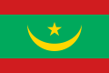 Mauritanie | Nouakchott | 4 900 000 (2026) | 1 030 700 |
| Mayotte | Dzaoudzi, Mamoudzou | 320 901 (2024) | 374 |
| Mexique | Mexico | 132 274 416 (2024) | 1 972 550 |
| Micronésie | Palikir | 75 817 (2023) | 702 |
| Moldavie | Chișinău | 2 409 207 (2024) | 33 844 |
| Monaco | Monaco | 38 857 (2025) | 2,08 |
| Mongolie | Oulan-Bator | 3 409 939 (2021) | 1 564 116 |
| Monténégro | Podgorica | 617 213 (2022) | 13 883 |
| Montserrat | Plymouth, Brades | 5 440 (2023) | 102 |
| Mozambique | Maputo | 29 668 834 (2017) | 801 590 |
| Myanmar (Birmanie) | Naypyidaw | 53 370 609 (2017) | 676 577 |
| Namibie | Windhoek | 2 533 794 (2017) | 825 615 |
| Nauru | Yaren | 13 650 (2017) | 21 |
| Népal | Katmandou | 29 164 578 (2021) | 147 181 |
| Nicaragua | Managua | 7 005 764 (2025) | 120 340 |
| Niger | Niamey | 21 477 348 (2017) | 1 267 000 |
| Nigeria | Abuja | 211 400 708 (2021) | 923 768 |
| Niue | Alofi | 1 821 (2025) | 260 |
| Oslo | 5 627 400 (2026) | 385 207 | |
| Nouvelle-Calédonie | Nouméa | 278 500 (2017) | 18 576 |
| Nouvelle-Zélande | Wellington | 5 307 800 (2024) | 268 021 |
| Oman | Mascate | 5 100 000 (2026) | 309 500 |
| Ouganda | Kampala | 47 123 531 (2021) | 241 038 |
| Ouzbékistan | Tachkent | 34 915 100 (2021) | 448 978 |
| Pakistan | Islamabad | 223 773 700 (2021) | 881 913 |
| Palaos | Ngerulmud | 21 729 (2017) | 466 |
| Panama | Panama | 4 570 133 (2025) | 74 177 |
| Papouasie-Nouvelle-Guinée | Port Moresby | 8 935 000 (2020) | 462 840 |
| Paraguay | Asuncion | 6 811 297 (2017) | 406 756 |
| Pays-Bas | Amsterdam | 17 100 715 (2013) | 42 201 |
| Pays-Bas caribéens | — | 29 418 (2023) | 322 |
| Pérou | Lima | 34 157 732 (2025) | 1 285 216 |
| Philippines | Manille | 112 729 484 (2024) | 343 448 |
| Pologne | Varsovie | 37 563 071 (2024) | 312 683 |
| Polynésie française | Papeete | 278 786 (2022) | 4 167 |
| Porto Rico | San Juan | 3 285 874 (2020) | 9 104 |
| Portugal | Lisbonne | 10 347 892 (2021) | 92 225 |
| Qatar | Doha | 2 639 211 (2017) | 11 437 |
| R.A.S. chinoise de Hong Kong | — | 7 413 070 (2021) | 2 755 |
| R.A.S. chinoise de Macao | — | 682 100 (2021) | 115 |
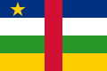 République centrafricaine | Bangui | 5 152 421 (2023) | 622 984 |
| République dominicaine | Saint-Domingue | 10 760 028 (2022) | 48 671 |
| Roumanie | Bucarest | 19 053 815 (2022) | 238 397 |
| Royaume-Uni | Londres | 67 326 569 (2021) | 242 495 |
| Russie | Moscou | 146 119 928 (2025) | 17 075 400 |
| Rwanda | Kigali | 14 569 341 (2025) | 26 338 |
| Sahara occidental | — | 612 000 (2021) | 266 000 |
| Saint-Barthélemy | Gustavia | 10 124 (2018) | 24 |
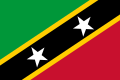 Saint-Christophe-et-Niévès | Basseterre | 46 922 (2025) | 269 |
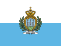 Saint-Marin | Saint-Marin | 34 167 (2026) | 61,2 |
| Marigot | 32 358 (2020) | 53,2 | |
| Saint-Martin (partie néerlandaise) | Philipsburg | 43 847 (2020) | 34 |
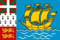 Saint-Pierre-et-Miquelon | Saint-Pierre | 5 974 (2019) | 242 |
| Saint-Vincent-et-les Grenadines | Kingstown | 109 296 (2023) | 389 |
| Sainte-Hélène | Jamestown | 5 633 (2016) | 394 |
| Sainte-Lucie | Castries | 167 591 (2023) | 617 |
| Salvador | San Salvador | 6 029 976 (2024) | 21 041 |
| Samoa | Apia | 200 010 (2021) | 2 842 |
| Samoa américaines | Pago Pago | 49 710 (2020) | 199 |
| Sao Tomé-et-Principe | São Tomé | 204 327 (2017) | 1 001 |
| Sénégal | Dakar | 18 100 000 (2026) | 196 722 |
| Serbie | Belgrade | 6 605 168 (2024) | 88 499 |
| Seychelles | Victoria | 119 773 (2023) | 459 |
| Sierra Leone | Freetown | 7 557 212 (2017) | 71 740 |
| Singapour | Singapour | 5 866 139 (2021) | 719 |
| Slovaquie | Bratislava | 5 409 407 (2025) | 49 034 |
| Slovénie | Ljubljana | 2 116 972 (2022) | 20 271 |
| Somalie | Mogadiscio | 18 100 000 (2026) | 637 657 |
| Soudan | Khartoum | 48 945 000 (2025) | 1 886 068 |
| Soudan du Sud | Djouba | 12 575 714 (2017) | 644 329 |
| Sri Lanka | Colombo, Sri Jayawardenapura | 22 037 000 (2023) | 65 610 |
| Suède | Stockholm | 10 609 460 (2025) | 447 425 |
| Suisse | Berne | 9 104 063 (2025) | 41 291 |
| Suriname | Paramaribo | 563 402 (2017) | 163 270 |
| Svalbard et Jan Mayen | — | 2 905 (2022) | 61 399 |
| Syrie | Damas | 23 000 000 (2026) | 185 180 |
| Tadjikistan | Douchanbé | 9 504 000 (2021) | 143 100 |
| Taïwan | Taipei | 23 262 544 (2026) | 36 193 |
| Tanzanie | Dodoma | 61 741 120 (2022) | 947 303 |
| Tchad | N'Djaména | 19 319 064 (2023) | 1 284 000 |
| Tchéquie | Prague | 10 909 500 (2025) | 78 871 |
| Terres australes françaises | Port-aux-Français | 140 | 7 829 |
| Territoire britannique de l’océan Indien | Diego Garcia | 3 000 (2018) | 60 |
| Territoires palestiniens | Ramallah, Jérusalem-Est | 5 400 000 (2026) | 6 020 |
| Thaïlande | Bangkok | 66 188 503 (2017) | 513 120 |
| Timor oriental | Dili | 1 400 638 (2024) | 14 919 |
| Togo | Lomé | 12 400 000 (2026) | 56 785 |
| Tokelau | — | 1 499 (2016) | 10 |
| Tonga | Nukuʻalofa | 105 697 (2020) | 749 |
| Trinité-et-Tobago | Port-d'Espagne | 1 369 125 (2017) | 5 128 |
| Tunisie | Tunis | 37 100 000 (2026) | 163 610 |
| Turkménistan | Achgabat | 6 117 933 (2021) | 491 210 |
| Turquie | Ankara | 85 372 377 (2023) | 783 562 |
| Tuvalu | Funafuti | 10 643 (2022) | 25,14 |
| Ukraine | Kiev | 41 167 335 (2022) | 603 550 |
| Uruguay | Montevideo | 3 444 263 (2023) | 176 215 |
| Vanuatu | Port-Vila | 300 019 (2020) | 12 190 |
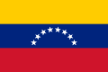 Venezuela | Caracas | 31 250 306 (2024) | 912 050 |
| Viêt Nam | Hanoï | 96 208 984 (2019) | 331 690 |
| Wallis-et-Futuna | Mata Utu | 11 558 (2018) | 274 |
| Yémen | Sanaa, Aden | 34 400 000 (2026) | 455 503 |
| Zambie | Lusaka | 19 610 769 (2022) | 752 618 |
| Zimbabwe | Harare | 15 178 979 (2022) | 390 757 |
Ressources pour apprendre la géographie
Cartes et images de la Terre
- OpenStreetMapInternational
Une carte détaillée du monde créée par des bénévoles : rues, bâtiments, sentiers, rivières ; libre et gratuite.
- Google EarthÉtats-Unis
Un globe en 3D avec des images satellite : survolez n’importe quel lieu de la Terre dans le navigateur ; gratuit.
- NASA WorldviewÉtats-Unis
Des images satellite récentes de toute la Terre par la NASA : incendies, ouragans, tempêtes de poussière, glaces — presque en temps réel.
- David Rumsey Map CollectionÉtats-Unis
Une immense collection de cartes et d’atlas anciens de plusieurs siècles en haute résolution ; consultation gratuite en ligne.
- WindyTchéquie
Des cartes météo animées du monde entier : vent, pluie, température, vagues, et des milliers de webcams.
Exercices et jeux
- SeterraSuède
Un entraîneur de géographie : pays, capitales, drapeaux, fleuves et montagnes sur la carte ; gratuit, en de nombreuses langues.
- Lizard PointCanada
Des quiz sur carte : trouvez un pays, une région ou une capitale d’un clic ; gratuit, en anglais.
- WorldleFrance
Un jeu quotidien : devinez le pays d’après sa silhouette en six essais ; gratuit.
Statistiques et données sur les pays
- Our World in DataRoyaume-Uni
Des graphiques et cartes clairs sur la population, la santé, l’éducation, l’énergie et le climat de tous les pays ; données ouvertes.
- GapminderSuède
Des graphiques animés qui montrent comment le monde change : revenus, santé et population des pays sur deux siècles.
- Données ouvertes de la Banque mondialeInternational
Des milliers d’indicateurs pour tous les pays : population, économie, éducation, santé ; gratuit.
- Statistiques de l’ONU (UNdata)International
Les statistiques de l’ONU sur les pays du monde en un seul endroit : population, économie, environnement.
Sociétés de géographie et organismes officiels
- Société russe de géographieRussie
Expéditions, vulgarisation scientifique, concours et la « Dictée géographique » annuelle ouverte à tous ; en russe.
- Comité statistique d’ArménieArménie
Les statistiques officielles de l’Arménie : population, recensements, économie, régions ; en arménien, russe et anglais.
Données sur les pays : Wikidata (domaine public) et le référentiel Unicode CLDR ; drapeaux : Wikimedia Commons. Population : dernière valeur de Wikidata, l’année entre parenthèses. Mis à jour le 25 octobre 2026. Une erreur ? Écrivez-nous sur WhatsApp.